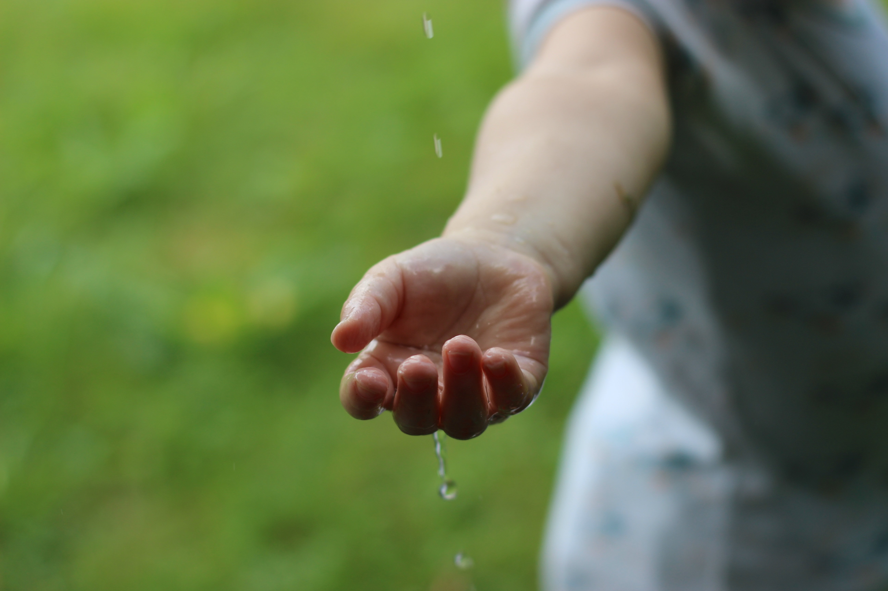

Rain by Thaliesin. Source: Pixabay
Resources
Images:
Alexas. Drinking glasses, Drinking straw, Drink image. Pixabay.com. Accessed 11 October, 2026.
Dennis. Single-use plastic waste in trash bin photo. Pixabay.com. Accessed 11 October, 2026
Thaliesin. Rain, Water, Element image. Pixabay.com. Accessed 11 October, 2026.